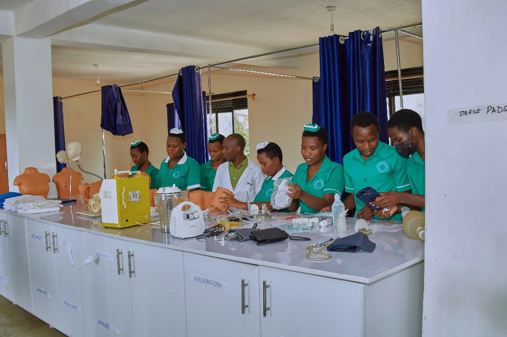

Campus
A view of the campus environment at Tumi Medical Institute.
Explore the campus and learning environments that support student life and nursing education.
Ask about visitingThese images offer a look at the campus, classroom learning, and practical skills training. For current facility access and visitor arrangements, please contact the school.
A view of the campus environment at Tumi Medical Institute.

Students take part in lessons as they develop their nursing knowledge.

A learning space for guided practice with clinical skills and equipment.
Contact the school to confirm visitor arrangements and the facilities available to students in each programme.